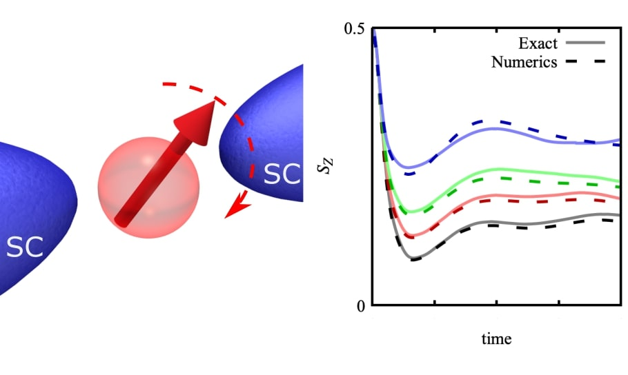
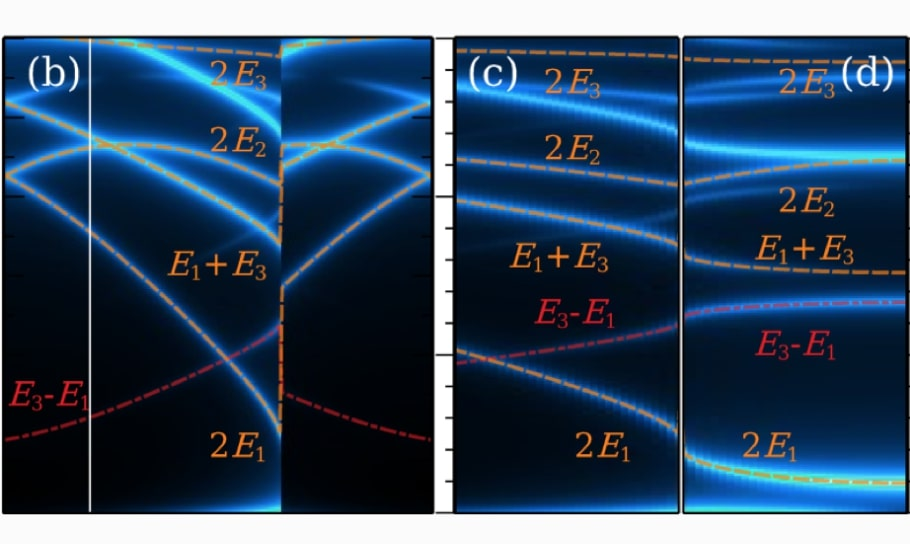
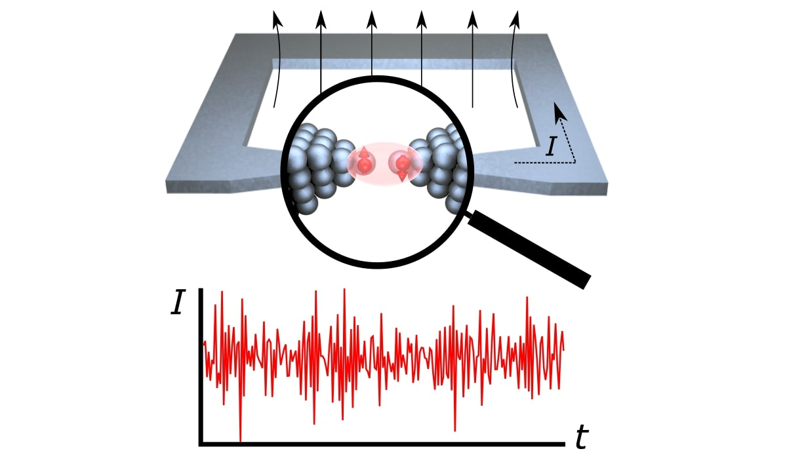

Electron spins in magnetic impurities or quantum dots are fundamental elements for the develpoment of quantum technologies. In this work, we analyze the time dynamics of a magnetic impurity when it is coupled to superconductors. We develop exact and approximated methods to show that many-body interactions are not sufficient to make the spin relax to the fully unpolarized situation. [Full article]
16 Dec 2021
Transient dynamics of a magnetic impurity coupled to superconducting electrodes

21 Sept 2021
Topological superconductivity at zero magnetic field

Advances in fabrication techniques have allowed to define thin and long superconductors, where self-consistent effects on the order parameter are important. In this work, we study a Josephson junction made out of a thin and long superconductor. We show noise is reduced in the system due to the renormalization of the superconducting order parameter, showing the strong potential of these systems for applications. [Full article]
6 Nov 2020
Topological superconductivity at zero magnetic field

Recent works have shown the possibility of engineering topological superconductivity at the frontier between a superconductor, a semiconductor, and a ferromagnetic insulator. In this work, we propose a new geometry where a thin ferromagnetic insulator between a superconductor and a semiconductor can lead to a topological phase. This proposal opens up the possibility of engineering topological superconductors in two-dimensional materials. [Full article]
6 Nov 2020
Signatures of odd frequency superconductivity in the noise spectrum

Odd frequency superconducting pairs appear naturally at the interface between BCS superconductors and other materials like superconductors, ferromagnetic materials or other superconductors. In this article we show that odd frequency pair pairs are formed in Josephson junctions by electrons at both sides of the junction. This pair amplitude, which is 4π periodic in the superconducting phase difference, leads to an enlarged supercurrent noise, which can be used as a way to detect odd frequency pairs in the junction. [Full article]
20 Mar 2020
Published book: Quench dynamics in interacting and superconducting nanojunctions
Effects of many-body interactions and superconducting correlations have become central questions in the quantum transport community. While most previous works investigating current fluctuations in nanodevices have been restricted to the stationary regime, this book extends these studies to the time domain. It provides relevant information about the time onset of electronic correlations mediated by interactions and superconductivity. This knowledge is essential for the development of fast electronic devices, as well as novel applications requiring fast manipulations, such as quantum information processing. In addition, the thesis establishes contact with issues of broad current interest such as non-equilibrium quantum phase transitions. [Full book from Springer Nature]